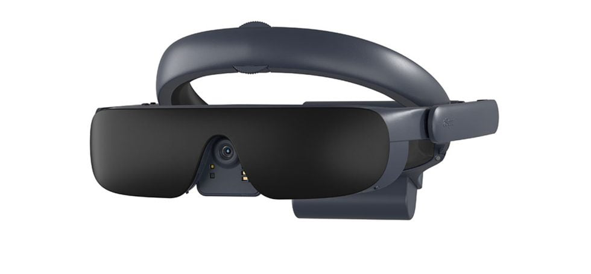

Introducción a las gafas eSight 4
Las gafas eSight 4 son un dispositivo de asistencia visual, diseñado para personas con discapacidades visuales, especialmente aquellas con baja visión. Con la ayuda de tecnología avanzada, estas gafas permiten mejorar significativamente la visión y brindan una experiencia visual casi normal
Las gafas eSight 4 son un dispositivo portátil que utiliza una cámara de alta resolución para capturar el entorno del usuario en tiempo real. Luego, la imagen se procesa y se presenta en dos pantallas OLED de alta calidad frente a los ojos del usuario. Esto permite que las personas con baja visión vean con mayor claridad, ajustando factores como el zoom, el contraste y la nitidez.
Características Principales
Cámara de alta resolución: Las gafas tienen una cámara central que captura todo lo que está alrededor con un detalle impresionante.
Pantallas OLED: Los usuarios ven la imagen procesada en tiempo real a través de pantallas de alta resolución que se ajustan automáticamente para optimizar la visión.
Control de Zoom y enfoque: Los usuarios pueden acercar o alejar la imagen, mejorando detalles que de otra manera serían difíciles de ver.
Ajustes personalizados: Los usuarios pueden ajustar el contraste, el brillo y la nitidez según sus necesidades visuales específicas.
Manos libres: eSight 4 ofrece un diseño manos libres, por lo que se pueden utilizar como unas gafas normales, mientras se realizan otras actividades.
Conectividad inalámbrica: Las gafas permiten conectarse a dispositivos móviles y pantallas a través de Wi-Fi y Bluetooth.
Beneficios del dispositivo
Movilidad: Al mejorar la capacidad de ver el entorno, los usuarios pueden caminar y moverse con mayor confianza.
Independencia: Permiten a los usuarios realizar tareas cotidianas como leer, escribir, ver la televisión, cocinar... sin depender de otras personas.
Acceso a la educación y el trabajo: Las gafas ayudan a las personas con baja visión a participar activamente en entornos educativos y laborales.
Mejoran la calidad de vida: Para quienes sufren de baja visión, eSight 4 puede marcar la diferencia entre la dependencia total y la independencia visual en muchas actividades.
Evolución del dispositivo a lo largo de la historia
Las gafas eSight han evolucionado notablemente desde su introducción, con cada versión mejorando en tecnología, diseño y funcionalidad para personas con baja visión. Aquí está un resumen de su desarrollo:
eSight 1 (2013): Esta primera versión fue revolucionaria por su concepto: un visor electrónico que capturaba imágenes en tiempo real para personas con baja visión. Sin embargo, el dispositivo era voluminoso y limitado en cuanto a movilidad y claridad visual.
eSight 2 (2015): Mejoró el diseño haciéndolo más ligero y cómodo, con una mejor cámara y controles simplificados. Aun así, su portabilidad y el ajuste visual requerían mejoras para el uso en movimiento.
eSight 3 (2017): Fue un gran avance al reducir el tamaño y peso del dispositivo significativamente. Incorporó tecnología de procesamiento de imágenes en HD, mejor capacidad de ajuste de zoom, contraste y color, y fue el primer modelo con diseño de gafas más cercano a unas gafas tradicionales, lo que facilitó mucho la movilidad.
eSight 4 (2020): Este modelo actual llevó la experiencia a otro nivel, con una pantalla OLED de alta definición, zoom de hasta 24x, Wi-Fi y Bluetooth integrados, y una app móvil para un control avanzado. El diseño es aún más ligero y ergonómico, permitiendo una mejor integración con la visión periférica y adaptándose mejor al uso en distintas actividades diarias.
Conclusión: Desde el modelo inicial, las gafas eSight han avanzado hacia una solución completa de asistencia visual que combina portabilidad, conectividad, y facilidad de uso, convirtiendo a las eSight 4 en una herramienta muy versátil y efectiva para personas con baja visión.
Las mejores del Mercado
Las eSight 4 destacan especialmente por su combinación de tecnología avanzada y diseño ligero, ideal para la movilidad y actividades diarias. Estas gafas ofrecen un zoom potente de hasta 24x, conectividad Wi-Fi y Bluetooth, y controles a través de una app móvil, lo que permite hacer ajustes en tiempo real. Además, su diseño de gafas abierto conserva parte de la visión periférica, permitiendo al usuario moverse con facilidad.
En comparación:
IrisVision ofrece buena calidad de imagen pero es tipo casco, ideal solo para tareas de cerca.
NuEyes Pro 3 es más ligero pero tiene un campo de visión limitado, adecuado para lectura y multimedia.
Jordy es potente en el zoom, pero su diseño es aparatoso y más útil para tareas estacionarias.
Conclusión: Las eSight 4 son la opción más completa para quienes buscan versatilidad, movilidad, y alta personalización visual, lo que las convierte en la elección perfecta entre los dispositivos de asistencia visual.
Preguntas Frecuentes
¿Las gafas funcionan para todas las condiciones de visión?
No. Están diseñadas específicamente para personas con baja visión y no son útiles para personas con ceguera total.
¿Cuánto duran las baterías?
La batería puede durar hasta 6 horas de uso continuo, y se puede cargar fácilmente.
¿Las gafas son cómodas de usar todo el día?
Sí, están diseñadas ergonómicamente para ser usadas durante varias horas al día.